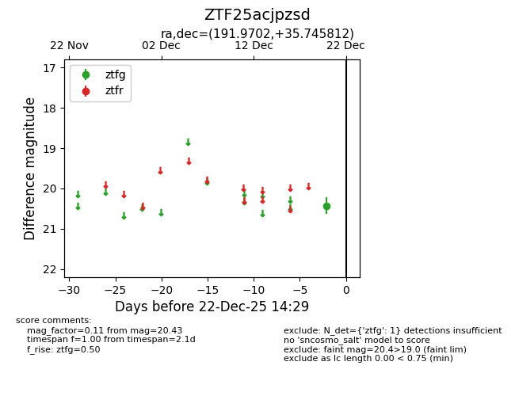
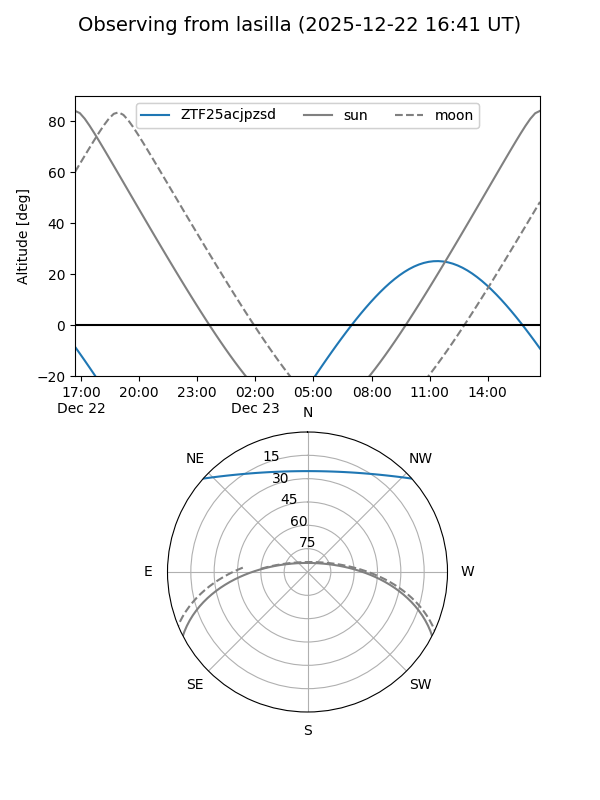
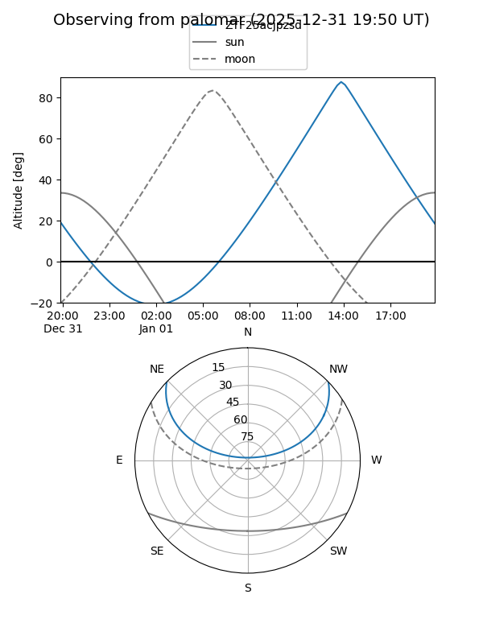

ZTF25acjpzsd
Target ZTF25acjpzsd at 2025-12-20 14:29
Aliases and brokers:
FINK: fink-portal.org/ZTF25acjpzsd
Lasair: lasair-ztf.lsst.ac.uk/objects/ZTF25acjpzsd
ALeRCE: alerce.online/object/ZTF25acjpzsd
alt names
ZTF25acjpzsd (ztf,fink_ztf)
Coordinates:
equatorial (ra, dec) = 191.9702,+35.74581
equatorial (HMS+DMS) = 12:47:52.84,+35:44:44.92
galactic (l, b) = (127.7360,+81.34923)
Flags:
Photometry:
last ztfg=20.43
1 ztfg detections
Lightcurve

Visibility


Additional plots